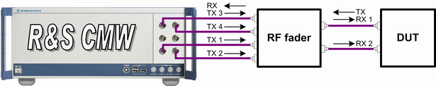

Test Setup for MIMO 4x2 with External RF Fading
The scenario "1CC - External RF Fading - 4x2" is used for MIMO 4x2 setups, where the four TX antenna signals are required at the RF connectors. Typically, an external RF fader is inserted into the downlink connection and one bidirectional connection carries one uplink and one downlink signal. Three additional connections carry the other downlink signals.
All downlink signals must be transmitted via different TX modules and different RF connectors. This requirement implies that the instrument must support four TX paths and must be equipped with two signaling units.

Test setup for 1CC - External RF Fading - 4x2